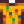

Artifact Trove
| Artifact Trove | |
| A blacksmith can open this for you. These troves often contain ancient relics and curiosities. | |
| Information | |
| Source | Desert Trader • Bookseller • Panning • Haunted Skull • Artifact Spots on Ginger Island • Mayor's Manor • Dog |
| Sell Price | |
The Artifact Trove is an artifact container that can be traded from the Desert Trader for 5 Omni Geodes each. The Bookseller may trade 3 Artifact Troves for 1 Treasure Appraisal Guide, provided the player has already obtained the power from that book. Up to 5 can be purchased from George's shop at the Desert Festival for  10 Calico Eggs each.
10 Calico Eggs each.
It can also be obtained by panning, dropped by Haunted Skulls if all Vault Bundles have been completed, found in Supply Crates on the Beach Farm once the player has upgraded the Farmhouse at least two times, or dug up from Artifact Spots on Ginger Island. Four or five Artifact Troves can be obtained as a prize from the Prize Machine. Five Artifact Troves may occasionally be found in treasure rooms in the Skull Cavern. It can also be gifted by a pet dog with max friendship.
Although most of the contents are artifacts, there are a few items, namely the Golden Pumpkin, Pearl, Treasure Appraisal Guide, and Treasure Chest, which are not.
The Artifact Trove can be broken open at the Blacksmith for  25g to obtain the contents inside. It cannot be broken open using a Geode Crusher.
25g to obtain the contents inside. It cannot be broken open using a Geode Crusher.
Contents
All items below have an equal (3.6%) chance of appearing inside an Artifact Trove.
Gifting
| Villager Reactions
| |
|---|---|
| Hate | |
Bundles
Artifact Trove is not used in any bundles.
Tailoring
Artifact Trove is used in the spool of the Sewing Machine to create the

Trinket Shirt.Quests
Artifact Trove is not used in any quests.
Notes
- By multiplying the sell price of each item by the chance to obtain it, the average profit of opening an Artifact Trove without having read the Treasure Appraisal Guide is
 472.4g, or 447.4g when the 25g opening cost is factored in. The profit after having read the guide is 660.4g, or 635.4g when the 25g opening cost is factored in.
472.4g, or 447.4g when the 25g opening cost is factored in. The profit after having read the guide is 660.4g, or 635.4g when the 25g opening cost is factored in. - Since the average profit when breaking open an Omni Geode is 96.4g, and it takes five Omni Geodes to trade for one Artifact Trove (i.e., 482g) at the Desert Trader, you will typically lose 35g every time you trade for one (if you have not yet read the Treasure Appraisal Guide). After having read it however, you will typically earn 153g per trade. This assumes you sell the contents.
History
- 1.4: Introduced.
- 1.5: Added Supply Crates and Ginger Island artifact spots to sources.
- 1.6: Added Treasure Appraisal Guide to possible items. Can now be purchased from George at the Desert Festival and traded from the Bookseller. Can now be obtained from the Prize Machine and from panning. Can now be gifted by a pet dog with max friendship.
- 1.6.4: Can now be obtained from Skull Cavern treasure rooms.